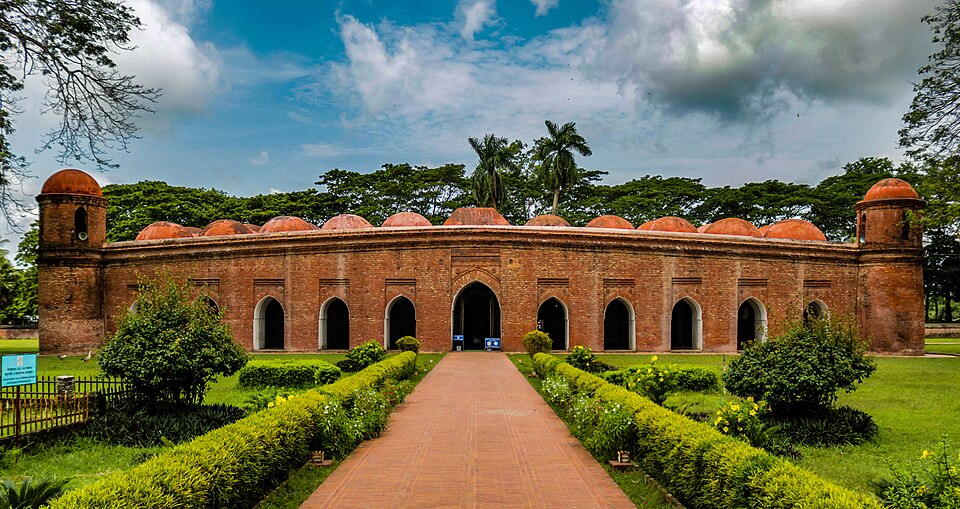

Region · Islamic heritage & UNESCO
Bagerhat
A forgotten 15th-century mosque city in the delta — eighty-one pillars, seventy-seven domes, and a shrine guarded by crocodiles fed by pilgrims for six hundred years.

Bagerhat was founded in the mid-15th century by the Muslim saint Khan Jahan Ali, who arrived from Delhi and built a city of mosques in the mangrove delta. Most of it was reclaimed by forest within two centuries — then rediscovered in the 19th century to reveal one of the most remarkable Islamic heritage sites in South Asia. It's a UNESCO World Heritage Site visited by far fewer people than it deserves.
The main sights
- Sixty Dome Mosque (Shat Gombuj Masjid). The largest medieval mosque in Bangladesh. Eighty-one stone columns support seventy-seven terracotta domes in a vast hypostyle hall — the arcades stretch away in every direction like a forest of brick and shadow. An afternoon visit, when the light falls through the arched walls, is extraordinary.
- Khan Jahan Ali Shrine and tank. The mausoleum of Bagerhat's founder, beside a large sacred tank inhabited by saltwater crocodiles — fed by pilgrims for centuries and still docile. One of the most unusual religious sites in Bangladesh.
- Nine Dome Mosque (Nau Gumbad). A smaller, perfectly proportioned 15th-century mosque of nine equal domes in a 3×3 grid — considered the finest example of the Bengal Sultanate style.
How long to plan
All three sites can be covered in one long day from Khulna — but a night in Bagerhat slows the pace and lets you return to the Sixty Dome Mosque at dawn, before the day visitors arrive, for the best photographs. Two days is ideal.
Getting there
Bagerhat is 20–30 km from Khulna — easy by local bus or CNG. Most travellers base themselves in Khulna, which has better hotels and connects directly to the Sundarbans. From Dhaka, overnight buses to Khulna run daily (5–7 hours).
Pair with the Sundarbans. Bagerhat and the Sundarbans share a Khulna base — combining them adds only transport time and turns the south-west into a 5–7 day leg that mixes UNESCO heritage with the world's largest mangrove.